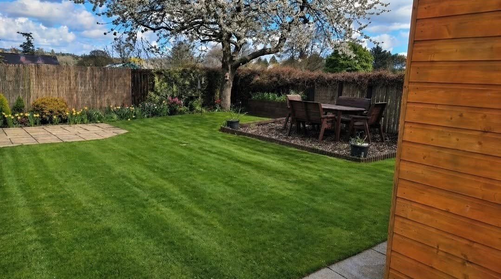
Gardens & Landscaping in Dundee
Good gardens create room for more.
John Anderson-McGuinness Gardens and Landscapes Ltd is a local family run business in Dundee. From smaller gardens to larger shared spaces, the focus is on making outdoor areas useful, welcoming and enjoyable.
Request a quote →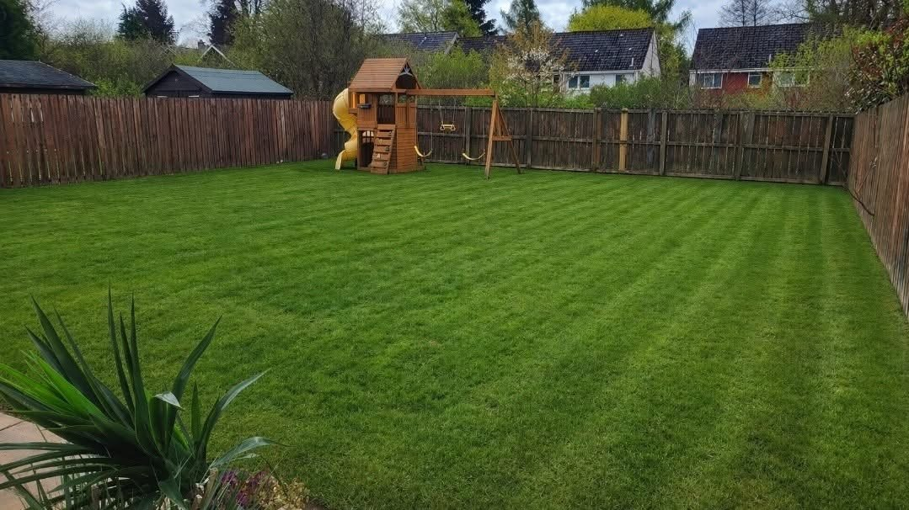
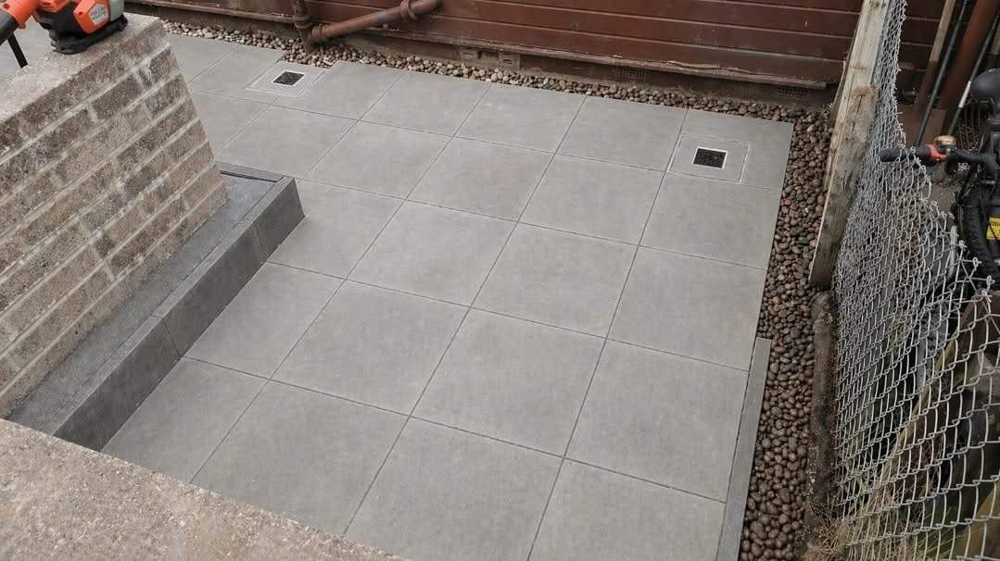
Garden care & Paving & landscaping
Space for play, learning and connection.
The supplied work includes timber play structures, raised planters, outdoor tables and paved areas. A useful outdoor space starts with how it will be enjoyed.
Discuss your project →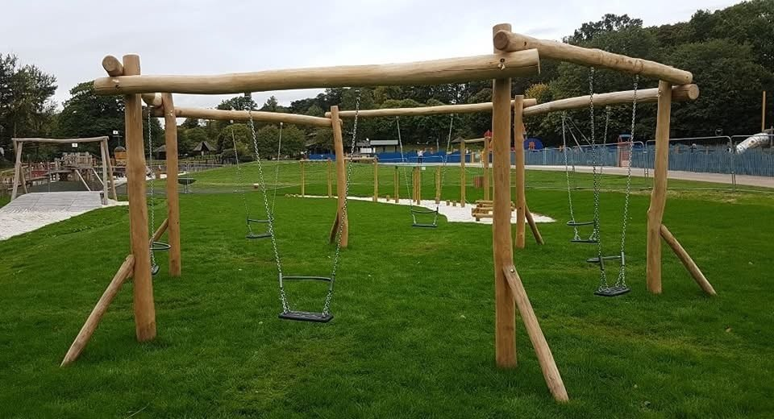
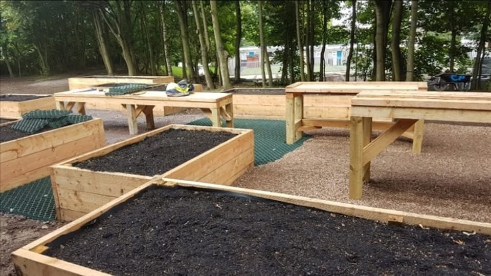
RECENT WORK
See the finished work.
A closer look at projects and work in progress.
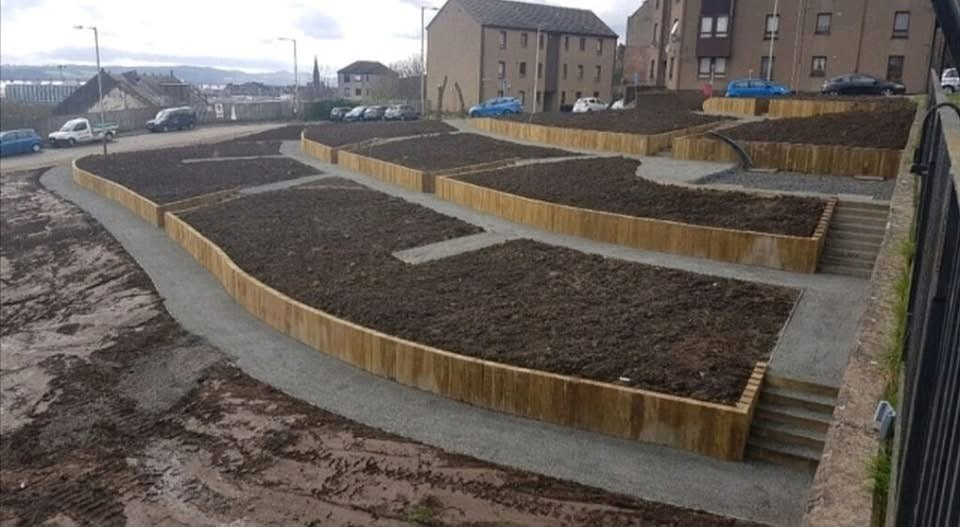
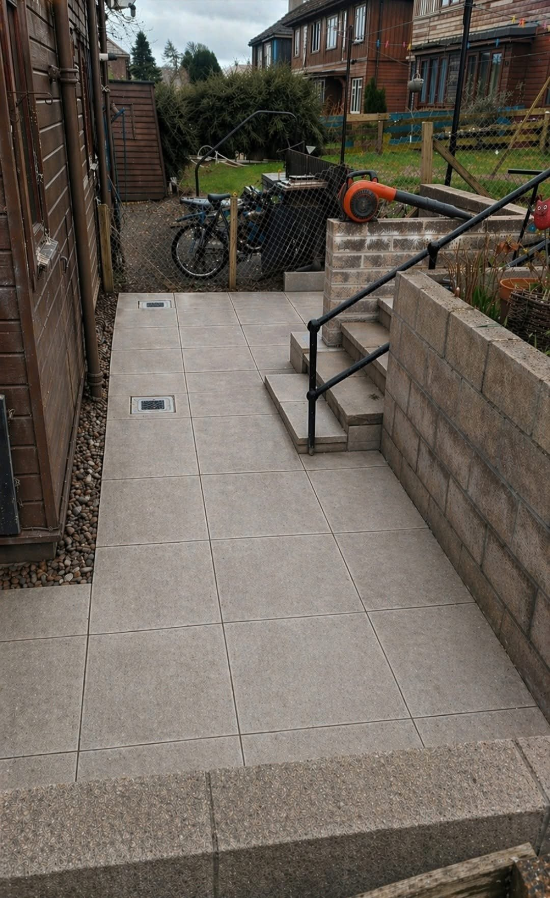
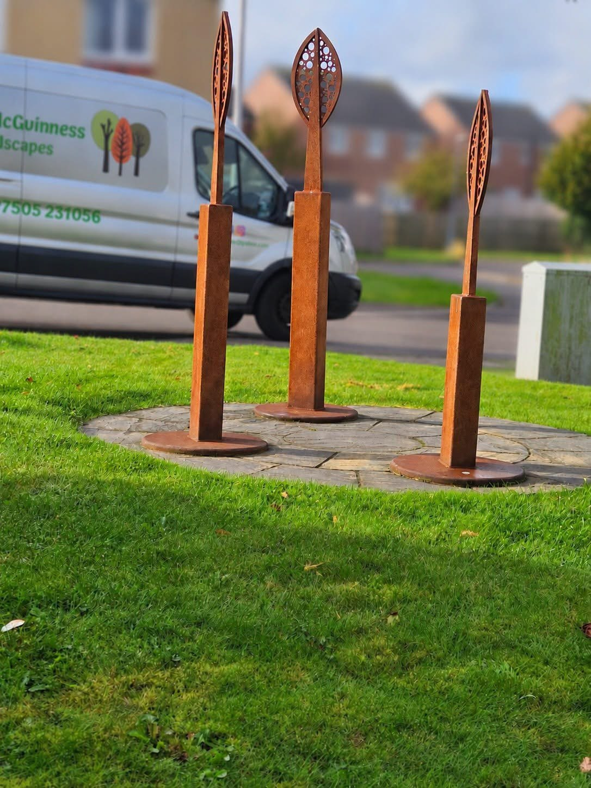
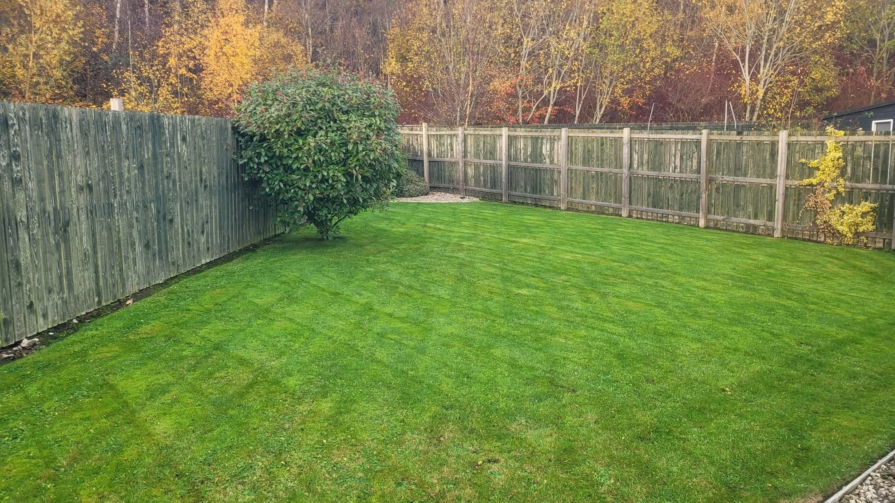
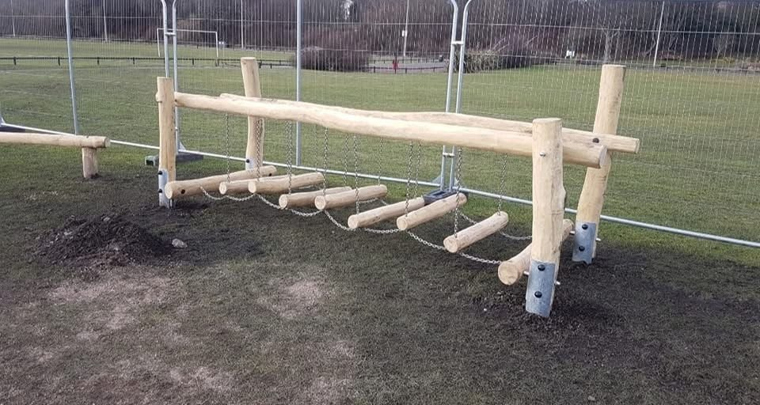
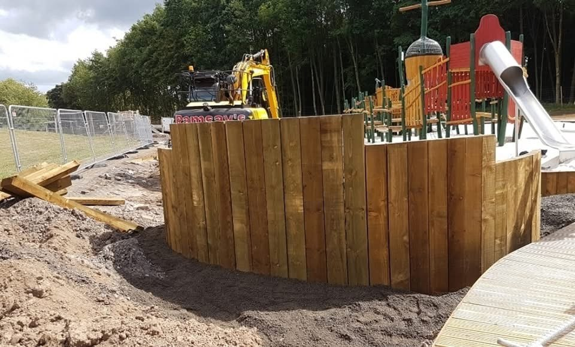
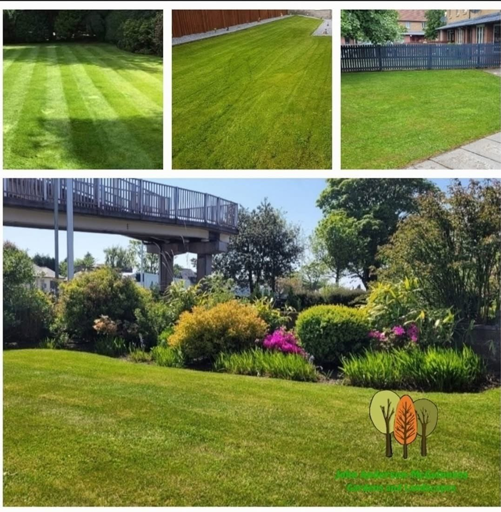
PROJECT DETAILS
Spaces for everyday living and outdoor play.
The supplied projects show paved areas and timber outdoor features, each bringing a different use to the space.
Discuss your space →Dundee
Outdoor spaces, thoughtfully done.
Based in Dundee, John works across gardens and larger outdoor projects. Have a space in mind? Share the details and start with a straightforward conversation.
Based in Dundee, working on garden spaces small and large.
The portfolio includes lawns, paving, paths and landscaped outdoor areas.
See play equipment, raised planters and shared outdoor spaces in the photographs.
GOOD TO KNOW
Your questions answered.
Where do you work?
Dundee is the supplied service area. Include your postcode so the location can be checked.
Can I send photos with my enquiry?
Yes. The form opens WhatsApp with your details. Attach photos of the space before sending.
How do I get a quote?
Call 07505 231056 or send the work details through the WhatsApp form. You can discuss the project and next steps directly.
REQUEST A QUOTE
Tell us what you have in mind.
Send the details of your project and its location. WhatsApp opens with your enquiry ready to send, where you can also attach photos.
John Anderson-McGuinness Gardens and Landscapes Ltd
Ready to discuss your project?
Dundee